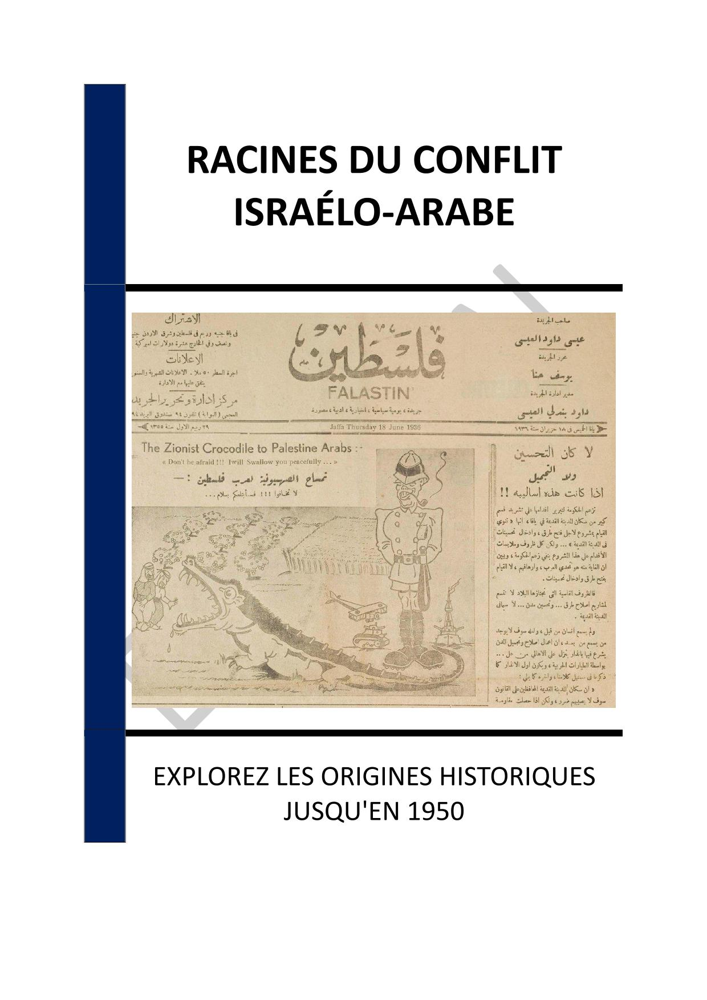

▶
Vitesse
++
+
=
-
--
INTRODUCTION - LES RACINES HISTORIQUES DU CONFLIT ISRAÉLO-ARABE
Chapitre 1 - LES ORIGINES DU SIONISME
1.1 - Contexte historique et émergence du sionisme
1.2 - Theodor Herzl et le premier congrès sioniste
1.3 - Les premières migrations juives vers la Palestine
Chapitre 2 - LE DÉCLIN DE L'EMPIRE OTTOMAN
2.1 - Les réformes des Tanzimat et leurs impacts
2.2 - Les guerres balkaniques et leurs répercussions
2.3 - La Première Guerre mondiale et la fin de l'Empire ottoman
Chapitre 3 - LES RIVALITÉS COLONIALES EN MÉDITERRANÉE
3.1 - Les ambitions des puissances européennes
3.2 - La conférence de San Remo et ses conséquences
3.3 - Les politiques coloniales et leurs impacts
Chapitre 4 - LA DÉCLARATION BALFOUR DE 1917
4.1 - Contexte et motivations de la déclaration
4.2 - Réactions des communautés locales
4.3 - Conséquences immédiates et à long terme
Chapitre 5 - LE MANDAT BRITANNIQUE SUR LA PALESTINE
5.1 - Mise en place du mandat et ses objectifs
5.2 - Les révoltes arabes contre le mandat
5.3 - Les politiques britanniques et leurs échecs
Chapitre 6 - LES VIOLENCES INTERCOMMUNAUTAIRES
6.1 - Les émeutes de 1920 et 1929
6.2 - La grande révolte arabe de 1936-1939
6.3 - Les impacts des violences sur les perceptions mutuelles
Chapitre 7 - LA RÉSOLUTION DE PARTITION DE L'ONU EN 1947
7.1 - Le contexte de la résolution
7.2 - Les réactions des parties prenantes
7.3 - Les conséquences immédiates de la résolution
Chapitre 8 - LA GUERRE DE 1948 ET LA CRÉATION DE L'ÉTAT D'ISRAËL
8.1 - Les causes de la guerre
8.2 - Le déroulement du conflit
8.3 - Les conséquences de la guerre
CONCLUSION - UN HÉRITAGE DE TENSIONS ET D'ESPOIRS
📄 Consulter les annexes du livre
Mentions légales